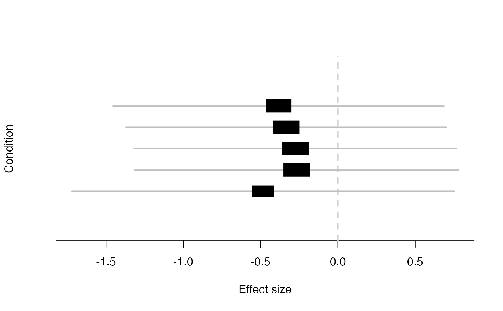

Plot metaplot for an effect based on posterior from mash
mash_plot_meta(m, i, xlab = "Effect size", ylab = "Condition", ...)
| m | the result of a mash fit |
|---|---|
| i | index of the effect to plot |
| xlab | Character string specifying x-axis label. |
| ylab | Character string specifying y-axis label. |
| ... | Additional arguments passed to |
simdata = simple_sims(50,5,1) data = mash_set_data(simdata$Bhat, simdata$Shat) m = mash(data, cov_canonical(data))#> - Computing 200 x 141 likelihood matrix. #> - Likelihood calculations took 0.01 seconds. #> - Fitting model with 141 mixture components. #> - Model fitting took 0.18 seconds. #> - Computing posterior matrices. #> - Computation allocated took 0.00 seconds.mash_plot_meta(m,1)